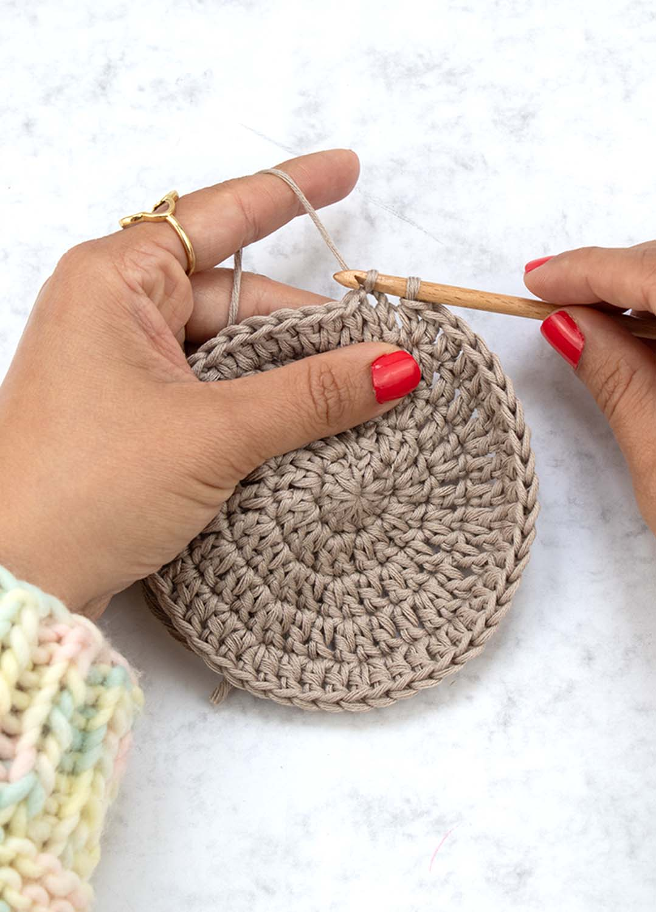
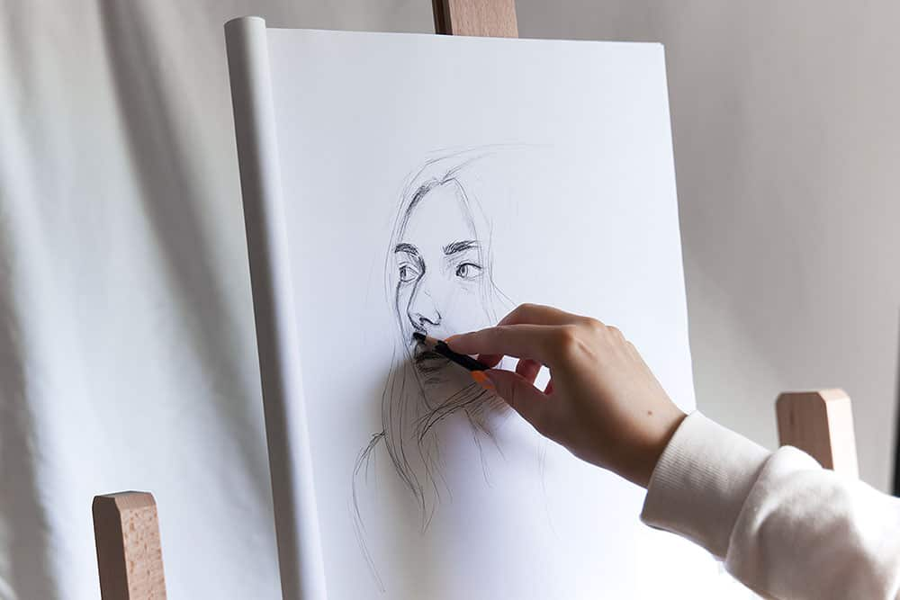
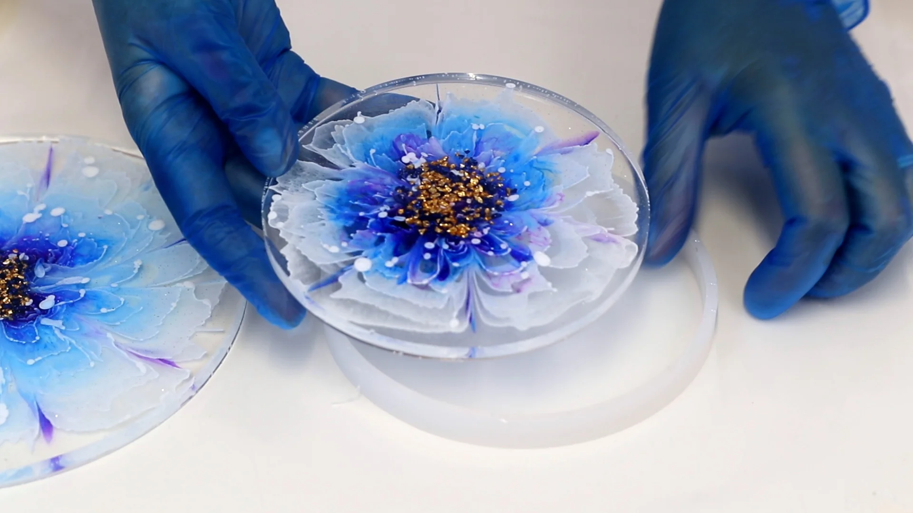
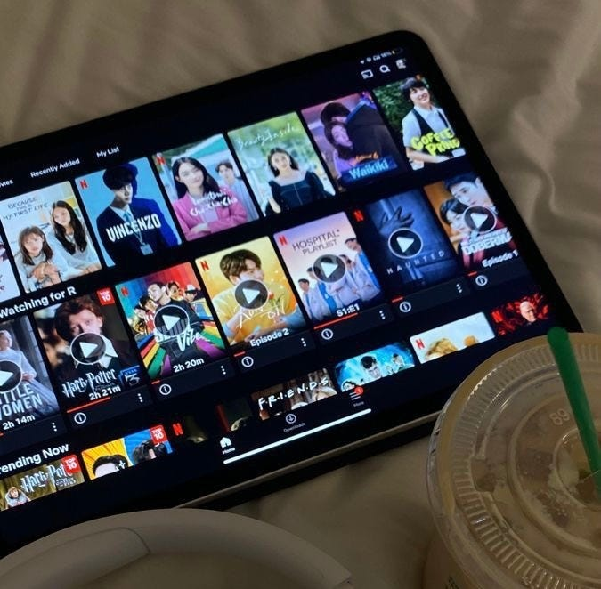
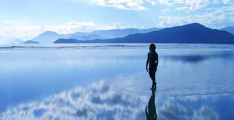

Hobbies
In my free time, I enjoy a variety of activities that fuel my creativity and passion for learning:
-

Crochet: I love creating intricate patterns and cozy items with yarn.
 Martial art: Martial arts keeps me strong, focused, and disciplined.
I practice martial arts to build both mental and physical strength.
Martial art: Martial arts keeps me strong, focused, and disciplined.
I practice martial arts to build both mental and physical strength. - Drawing helps me express what words can't.
Its my quiet way of telling stories.
I draw to explore, feel, and imagine.
-  Resin art: I create unique pieces that blend color and texture.
Resin art is my way of turning ideas into tangible beauty.
 Programming: I enjoy solving problems and building things with code.
Programming is like a puzzle that I love to solve, creating solutions that are both functional and elegant.
Programming: I enjoy solving problems and building things with code.
Programming is like a puzzle that I love to solve, creating solutions that are both functional and elegant.-  Watching dramas: I find inspiration in the stories and characters.
-
 Walking: I find peace in nature, especially near water.
Walking helps me clear my mind and connect with my surroundings.
- love creating with my hands,crochet, drawing, and resin are my favorite ways to express myself.
- Martial arts helps me stay grounded, focused, and strong,inside and out
- Programming is my kind of puzzle,challenging, creative, and endlessly satisfying.
- I enjoy watching dramas, especially K-dramas, for their emotion, beauty, and storytelling.
- I find peace in quiet walks, especially near water—it's where I feel most connected to myself.
These hobbies not only enrich my life but also influence my work, allowing me to bring fresh perspectives to both my art and coding projects.